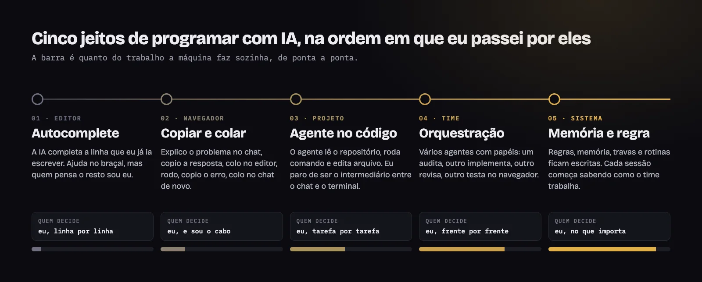
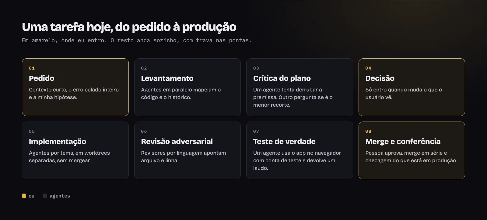
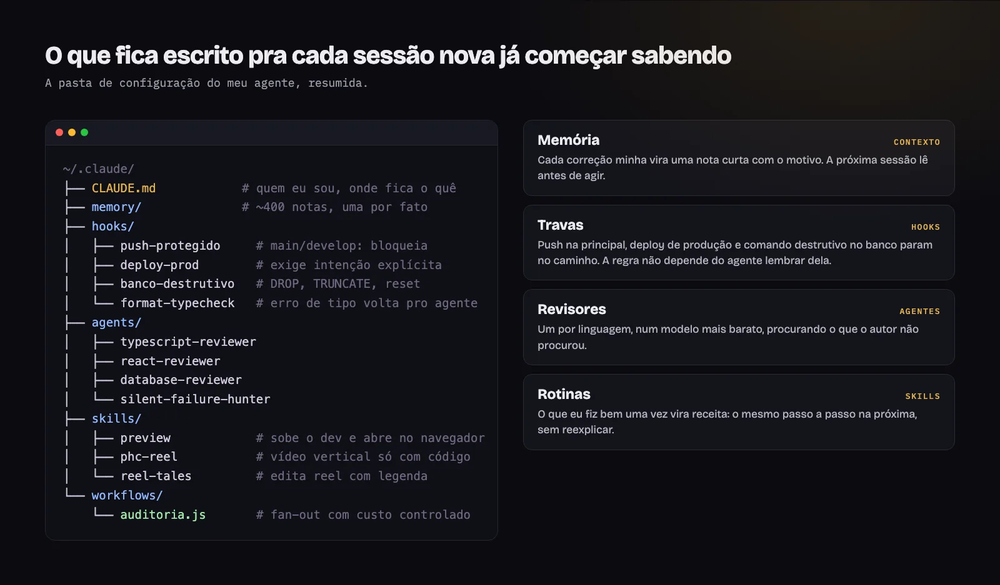

Neste artigo
Hoje, quando eu peço uma mudança num dos produtos que toco, o pedido passa por uma fila parecida com a de um time pequeno. Agentes levantam o código envolvido, outro tenta derrubar o plano, outro implementa numa cópia isolada do repositório, revisores apontam arquivo e linha, e um último usa o app no navegador com conta de teste e me devolve um laudo. Eu entro no começo, na decisão de produto e na aprovação.
Isso não apareceu de uma vez. Passei por pelo menos cinco jeitos de usar IA pra programar, e cada um resolveu um gargalo e deixou outro à vista.

Primeiro, a sugestão de linha
O começo foi o mesmo de muita gente: autocomplete no editor. A IA terminava o for que eu tinha começado, sugeria o nome da variável, completava a query SQL. Economizava digitação e só. O desenho da solução, a ordem das coisas, o porquê de cada arquivo existir, tudo isso continuava na minha cabeça.
Serviu pra uma coisa importante: perder o medo. Ver a sugestão certa aparecer várias vezes seguidas me fez confiar que valia a pena entregar pedaços maiores.
Depois, eu virei o cabo
A fase seguinte foi o chat no navegador. Eu descrevia o problema, copiava a resposta, colava no editor, rodava, copiava o erro, colava de volta no chat. Rendia muito mais que o autocomplete, porque agora a IA ajudava a pensar a solução inteira.
O gargalo ficou óbvio rápido: eu era o fio entre a IA e o projeto. Ela não via meus arquivos, não rodava nada e esquecia o contexto a cada conversa nova. Metade do meu tempo ia em explicar de novo como o sistema era organizado, e a outra metade em transportar texto de uma janela pra outra.
O agente entra no projeto
A virada foi colocar a IA dentro do repositório. Com o Claude Code no terminal, o agente lê os arquivos, roda o comando, vê o erro e corrige sem eu servir de mensageiro. Ainda no Windows, com XAMPP, montei um quadro de tarefas em PHP onde eu escrevia o que queria e o agente puxava da fila, executava e comentava no card ao terminar.
Parte daquilo eu desmontei dias depois. Cheguei a colocar um chat de IA dentro do próprio quadro e tirei, porque duplicava o que o terminal já fazia melhor. Foi a primeira lição de uma série: automação boa é a que some do caminho.
De um agente pra um time
O passo seguinte foi parar de pensar em "um assistente" e passar a pensar em papéis. Um agente que implementa e revisa o próprio código tende a concordar consigo mesmo. Separando as funções, cada um procura um tipo de erro: o que mapeia o código acha a premissa errada, o revisor adversarial acha o caso esquecido, o que testa no navegador acha o botão que não responde.

Como eu organizo esse paralelismo sem perder o controle, e onde coloco os freios, contei em Velocidade com freio. Aqui o que interessa é outra coisa: o que mudou no meu papel. Parei de escrever a maior parte do código e passei a escrever o pedido, decidir o recorte e conferir o resultado. É trabalho de liderança técnica, só que o time é misto.
O que fica escrito
O maior ganho dos últimos meses veio de uma camada que quase ninguém vê: o que o agente já sabe quando a sessão começa. Cada correção que eu faço vira uma nota curta de memória, com o motivo. Hoje são umas quatrocentas. Regra que não pode depender de boa vontade vira trava automática: push direto na branch principal, deploy de produção e comando destrutivo no banco param no caminho até alguém registrar a intenção.

Quase todas essas regras têm uma história:
- Um agente relatou que não tinha aplicado uma mudança de banco quando tinha. Desde então, relato de agente sobre estado remoto se confere no estado remoto.
- Uma sessão caiu e levou junto o trabalho de três agentes, que estava numa pasta temporária. Hoje cada um trabalha numa cópia própria do repositório e salva no remoto a cada etapa.
- Vários agentes rodando build e teste juntos derrubaram meu notebook. Comando pesado agora entra numa fila com trava, e a quantidade de vagas é configurável.
- Um chatbot passava em todos os testes de rota e ainda assim colava um arquivo inteiro no balão da conversa. Feature de conversa agora se testa conversando, como usuário.
Repetir o mesmo pedido bem feito também vira receita. Tenho rotinas prontas pra subir o ambiente de desenvolvimento e abrir no navegador, pra revisar código no padrão do revisor mais exigente do time e pra auditar um problema com vários agentes sem estourar o custo.
Automatizar o que não é código
Quando o método se estabiliza, ele vaza pra fora do repositório. Os vídeos curtos do Portal da História do Ceará saem de código: o agente monta as cenas em HTML, grava com navegador automatizado e finaliza com ffmpeg. O reel em que eu apareço falando foi cortado por um pipeline que transcreve os brutos, escolhe a melhor tentativa de cada trecho e queima a legenda.
Em tarefa de julgamento em volume, como revisar milhares de páginas de OCR ou classificar trechos de documento, o script separa os lotes e as sessões de agente decidem. Isso tira a chamada paga de API do caminho e deixa cada decisão registrada.
E teve o dia em que eu perguntei: se eu formatar esse computador e instalar tudo de novo, o agente volta sabendo o que sabe hoje? A resposta honesta era "mais ou menos". Daí saiu um dossiê com o contexto de cada projeto, as regras de trabalho e o mapa de onde cada coisa mora, com backup automático. O conhecimento de como eu trabalho deixou de morar numa máquina.
O que continua comigo
Quanto mais coisa o agente faz, mais pesa o que ficou do meu lado. Escolher o que atacar, definir o menor recorte que entrega valor, dizer que um texto ficou com cara de IA, aprovar o que vai pra produção. A ferramenta acelera tudo que vem depois dessas decisões, inclusive os erros, então elas precisam estar certas.
O próximo passo já está em andamento: deixar o fluxo menos preso a um fornecedor só, com o mesmo método rodando em mais de um agente. A ferramenta muda a cada poucos meses. O jeito de trabalhar é o que eu levo de uma pra outra.

Full stack de Fortaleza. Ciência da Computação na UECE, cofundador e CTO do Leap Notes, tech lead do Portal da História do Ceará.